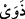

veya zaman ya da takdir edilmiş işlerden herhangi biri olsun farketmez. Bu kelimelerle
o hedefe her ne kadar varılmasa da yaklaşmak anlamı ifâde edilir. Tıpkı bu âyet-i
kerimede olduğu gibi. Çünkü bu âyette iddetlerini doldurduklarında denilmekte fakat
maksad iddet müddetlerini doldurmaya yaklaştıklarında demektir. Çünkü kadın o
sürenin en uç noktasına vardığında erkeğin o kadına dönmesi ve onu elinde tutması
mümkün değildir. Âyet metninde yer alan “ecel” kelimesi ile kasdedilen herhangi bir
şey için tâyin edilmiş, belirlenmiş bulunan süre demektir.
“Onları ya” kendileriyle güzel geçinerek ve uygun bir infakta bulunarak “güzellikle
nikâhınız altında tutun” yâni sizler muhayyersiniz, dilerseniz onlara rucû edin. Rucû’
Ebû Hanife’ye göre söz ile olabileceği gibi cinsel birleşmeyle, şehvetle cinsel organına
bakmak ve dokunmakla da olur. Bir hadis-i şerifte şöyle buyrulur: “Müminlerin en
mükemmeli, ahlâkça en güzelleri ve âile fertlerine en hoş davrananlarıdır.”[187]
“Veya” haklarını vererek kendilerine önce rücû’ edip sonra yeniden boşayıp bekleme
sürelerini uzatmak sûretiyle kendilerine zarar vermekten kaçınarak “onlardan meşru
ölçülere göre ayrılın. İçinizden” yâni müslümanların içinden, nitekim Hasan Basrî
âyeti böyle anlamıştır. Ya da Katade’nin tefsir ettiği gibi hür olanlarınızın arasından
demektir. “Adâlet sâhibi iki kişiyi de” buradaki “/zevey” kelimesi mansup olup
sâhib mânâsınadır “şâhid tutun.” Yâni ric’at yaptığınızda veya ayrıldığınızda
çekişmeyi önlemek için adâlet sâhibi iki kişiyi şâhid tutun. Çünkü kadın bekleme
süresinin geçmesinden sonra kocasının kendisine bu süre içinde dönmüş olduğunu inkâr
edebilir. Belki de eşlerden birisi ayrılıktan sonra ölebilir ve bunlardan hayatta kalan eş
miras alabilmek için evliliğin devam ettiğini iddiâ edebilir. Şâhid tutulması hususundaki
emir vücub ifâde etmez, mendupluk ifâde eder. Bu iki şâhid zâlim ve fâsık
olmayacaklar, tersine âdil olacaklardır. Adâlet; insanın büyük günahları işlemekten
kaçınması, küçük günahlarda ısrarlı olmaması ve iyiliklerinin kötülüklerine galip
olması demektir. Herhangi bir küçük günahı ısrar etmeksizin işlemek adâleti zedelemez.
Çünkü insan olup da peygamberlerin dışında mâsum olan yoktur. Nitekim fıkıh
kitaplarında böyle kaydedilmektedir.
Ey şâhidler ihtiyaç esnasında “şâhidliği” samîmî olarak “Allah için yapın.” Bu da
şâhidlerin şâhidliği kendisine şâhidlik edilen kişinin lehine ve aleyhine yapmalarıdır.
Hakk’ın yerine getirilip zulmün savulmasının dışında başka bir gaye için
yapmamalarıdır. Eğer bir şâhid şâhidliği Allah için değil de herhangi bir amaç için
yapacak olursa, bu hareketiyle şâhidliği gizleme vebalinden kurtulmuş olur. Fakat
bundan sevap elde edemez. Çünkü ameller niyetlere bağlıdır. Kısaca ifâde etmek
gerekirse şâhidlik bir emanettir ve Yüce Allah’ın “Allah size mutlaka emanetleri ehli
olanlara vermenizi emrediyor” (en-Nisa, 4/58) âyetinde ifâde buyrulduğu üzere
emâneti yerine getirmek şarttır. Eğer bir kimse emaneti gizlemiş olursa hıyanet etmiş
olur. Hıyanet de Yüce Allah’ın “şâhidliği/ bildiklerinizi gizlemeyin, kim onu gizlerse
bilsin ki onun kalbi günahkârdır.” (el-Bakara, 2/283) âyetinin de gösterdiği üzere